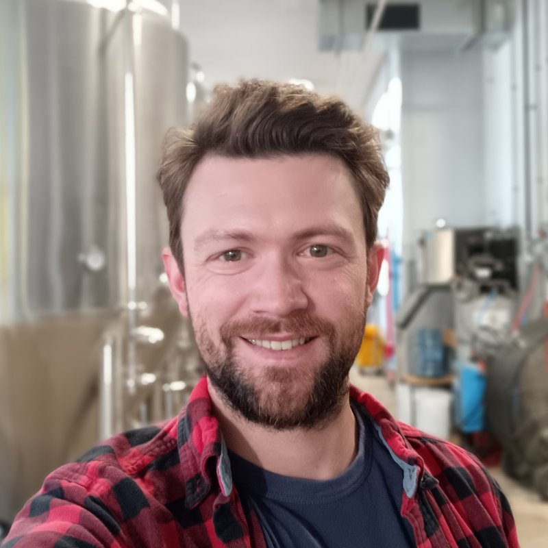
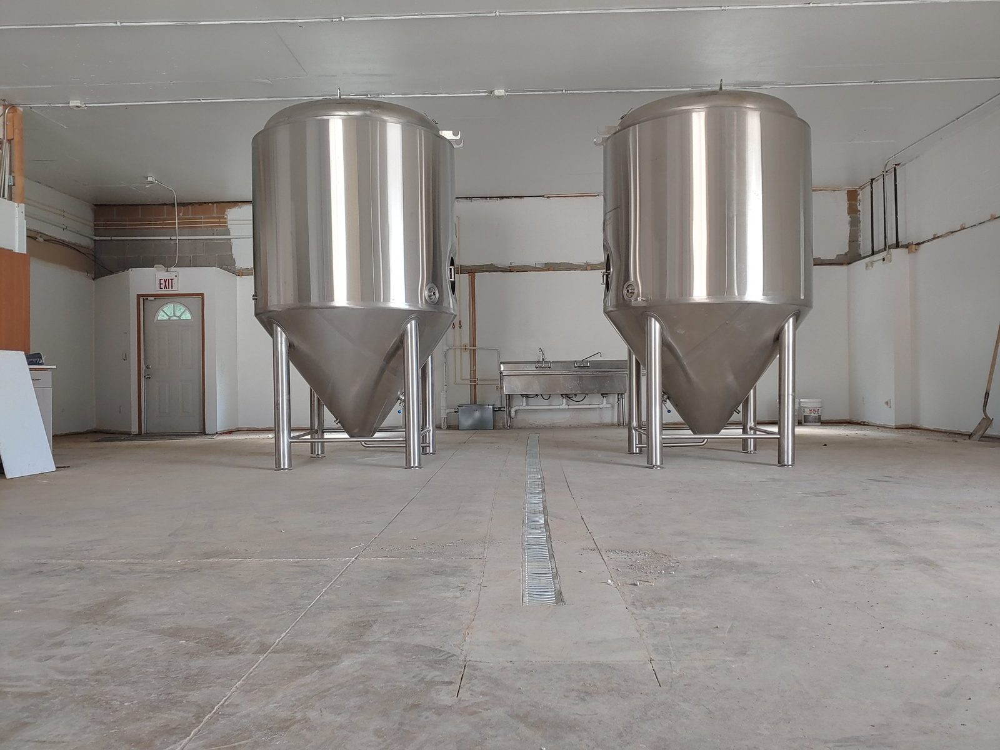

Quinn Bartlett · Columbus, OH
I build and run business operations.
From raising capital and clearing permits to managing construction and running production day to day.

What I do
-
Operations
Supervising production end to end, with standard procedures and quality control that keep every batch consistent.
-
Capital & investors
Structuring offerings, building presentations, and managing investor relationships to raise growth capital.
-
Compliance & permitting
Working through municipal, state, and federal licensing, including the TTB, from application to approval.
-
Build-out & delivery
Directing contractors, holding schedules, and keeping construction on budget.
Featured

Building Buzzsaw Brewing
How I took a brewery from corporate strategy and a capital raise through construction and permitting to daily operation.
Read the story →Let's talk
If you'd like to discuss operations, a brewery project, or working together, I'd be glad to hear from you.
Email me